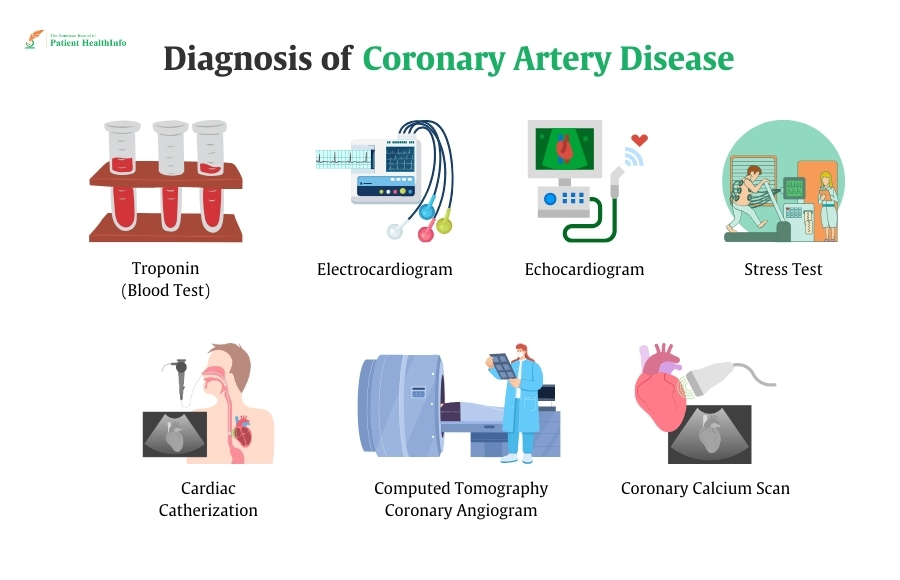

Patient needs to go for many invasive, time consuming and expensive tests for diagnosis of CAD.

Images from Pokharel, MD, B., & Dhakal, MD, B The American Journal of Patient Health Info 2024; 1(01) doi: 10.69512/ajphi.v1i01.37.
What is Pretest Probability ?
Pretest probability is the estimated probability, given a set of risk factors (e.g age, sex, etc.), that a patient has a specific disease or condition before any diagnostic tests are performed.
It helps clinicians and doctors makes informed decision on which patients go for which diagnostic tests.
Error in `calculate_esc_2024_fig_4_ptp()`:
! Provided input `age`, must be <numeric>, `NA` or `NaN`. It is
currently "Something Else" of type <character>
Error in `calculate_esc_2024_fig_4_ptp()`:
! `sex` must be one of "male", "男性", "男人", "female", "女性", "女人",
"NIL", "NA", or "NaN", not "女性性".
ℹ Did you mean "女性"?
Error in `calculate_esc_2024_fig_4_ptp()`:
! `label_sex_male`, `label_sex_female` and `label_sex_unknown` must be
mutually exclusive.
Common values found in `label_sex_male` and `label_sex_female`: "Anything" and
"male".
Common values found in `label_sex_male` and `label_sex_unknown`: "Anything" and
"随便".
Common values found in `label_sex_female` and `label_sex_unknown`: "Anything".
Please ensure `label_sex_male`, `label_sex_female` and `label_sex_unknown` do
not hold common values.
Use of purrr
patient_data <- tibble::tribble(~unique_id,~age, ~sex, ~chest_pain_type, ~have_dyspnoea, ~have_family_history, ~have_smoking_history, ~have_dyslipidemia, ~have_hypertension, ~have_diabetes,"45 year old male with typical chest pain, no dyspnoea, hypertension and diabetes",45, "male", "typical", "no", "no", "no", "no", "yes", "yes","70 year old female with no chest pain, dyspnoea, have smoking history (past or current smoker) and dyslipidemia",70, "female", "no chest pain", "yes", "no", "yes", "yes", "no", "no")risk_data <- patient_data |> dplyr::mutate(esc_2024_ptp_percent = purrr::pmap_chr(.l =list(age = .data[["age"]],sex = .data[["sex"]],chest_pain_type = .data[["chest_pain_type"]],have_dyspnoea = .data[["have_dyspnoea"]],have_family_history = .data[["have_family_history"]],have_smoking_history = .data[["have_smoking_history"]],have_dyslipidemia = .data[["have_dyslipidemia"]],have_hypertension = .data[["have_hypertension"]],have_diabetes = .data[["have_diabetes"]],output ="percentage" ),.f = pretestcad::calculate_esc_2024_fig_4_ptp ) ) |> dplyr::select(c("unique_id", "esc_2024_ptp_percent") )print(risk_data)
# A tibble: 2 × 2
unique_id esc_2024_ptp_percent
<chr> <chr>
1 45 year old male with typical chest pain, no dyspnoea, h… 20%
2 70 year old female with no chest pain, dyspnoea, have sm… 10%